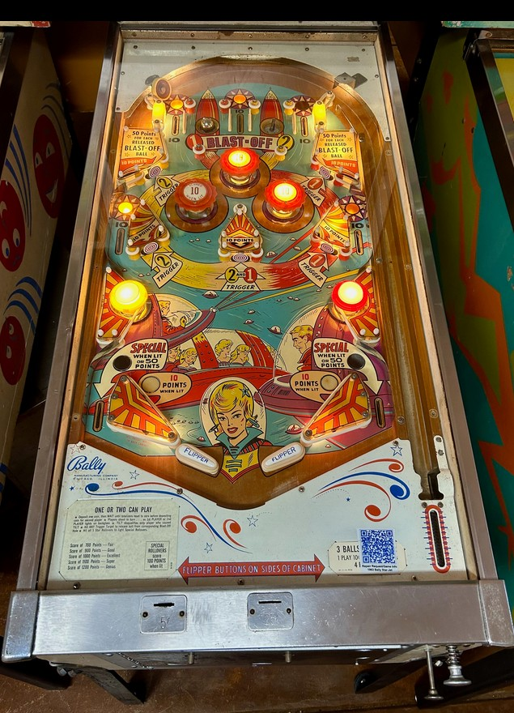

The three top lanes score 10 points. In between the left + center top lanes as well as between the center + right top lanes are saucers labelled Blast-Off 1 and 2. Putting a ball in either of these saucers locks it. To release locked ball(s), hit standup targets around the game that "trigger" the number corresponding to the Blast-Off saucer where a ball is locked. The upper left and middle left standup targets trigger saucer 2, the upper right and middle right standup targets trigger saucer 1, and the center standup target triggers both. These standup targets score 10 points, plus an additional 50 points for each ball successfully released from a Blast-Off saucer.
The three top lanes and two upper side lanes always score 10 points and start each ball with lit stars above them. Making any of these lanes unlights the star. Unlighting all 5 stars in a single ball lights the out lanes for Special, which can only be set to score 1 free game as far as I have seen. This is nearly impossible to do unless the pop bumpers are very strong and can flick the ball upward into the top lanes or Blast-Off saucers during normal play after a plunge.
Pop bumpers and slingshots score 1 point, or 10 when lit. Like many mid-1960s Bally games, bumpers and slingshots are lit pseudorandomly, with lit bumpers and slingshots being less common if the machine has recently given out free games.
There is no end of ball bonus or conventional extra ball feature. The "Shoot Again" light on the backglass is only used to indicate to a player that they locked a ball in a Blast-Off saucer and can continue their turn since they did not drain. Tilt ends game, but only for the player who tilted.
The below picture of Star-Jet's playfield was taken from Pinside, where it is listed as image #3887901.
